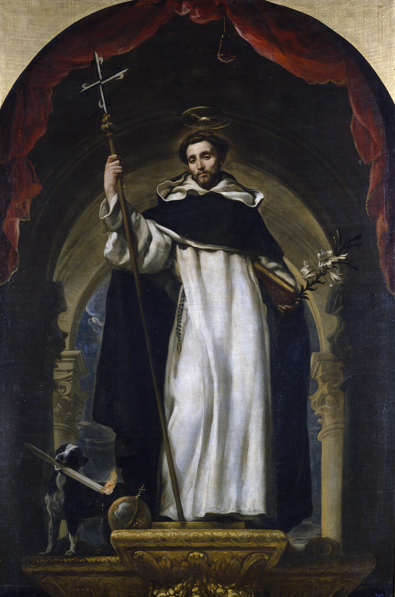
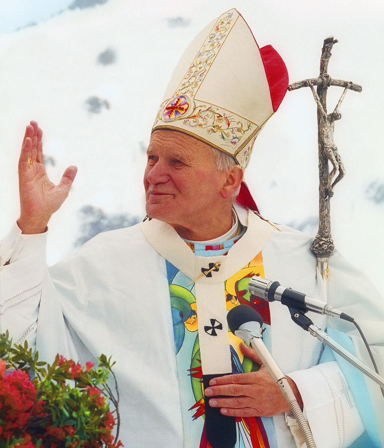
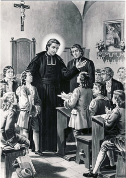
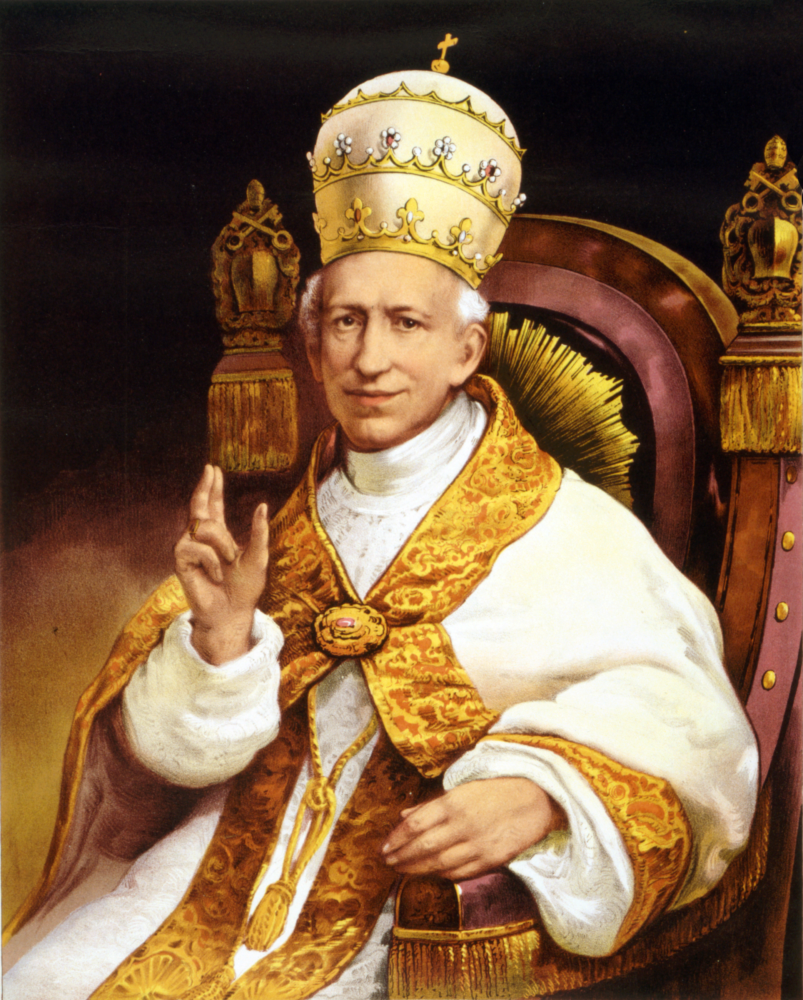
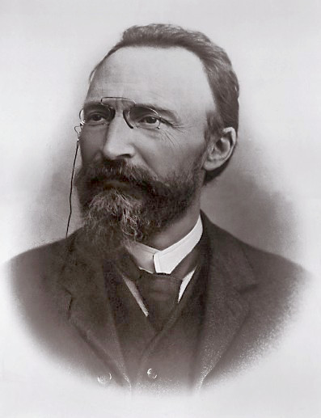
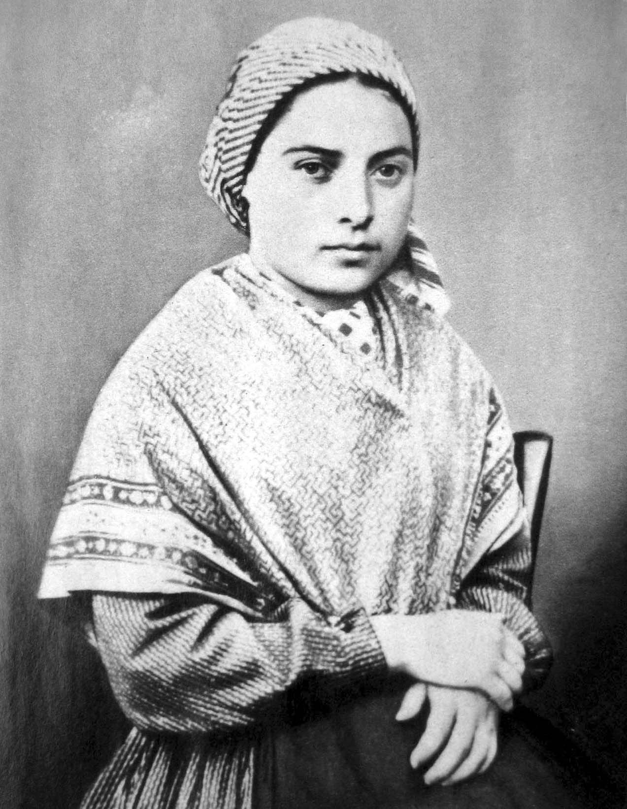

Dominican traditionSaint Dominic
Catholic memory associates Dominic and the Dominican family with preaching the Rosary as a way for ordinary people to contemplate the Gospel.
Place this in history
Saints and witnesses
These witnesses show the Rosary as preaching, conversion, papal teaching, shrine prayer, and ordinary perseverance.
Witnesses
Each profile points visitors toward a more reliable next step: Church documents, shrine materials, biographies, or the main Rosary path for prayer.

Dominican traditionCatholic memory associates Dominic and the Dominican family with preaching the Rosary as a way for ordinary people to contemplate the Gospel.
Place this in history
Biographical witnessDe Montfort taught the Rosary as a practical path of conversion, perseverance, and union with Jesus through Mary.
Learn the prayer rhythm
Papal teachingLeo XIII made the Rosary a public language of prayer for social crisis, family life, peace, and devotion.
See papal sourcesIn Rosarium Virginis Mariae, John Paul II described the Rosary as contemplating Christ with Mary and proposed the Luminous Mysteries.
Read Rosarium Virginis Mariae
Biographical witnessBartolo Longo's conversion and mission at Pompeii show the Rosary as a prayer for wounded, returning, and searching souls.
Read the Vatican biography
Approved shrine traditionLourdes holds together prayer, pilgrimage, suffering, and careful discernment. Bernadette's Rosary at the Grotto remains central to that witness.
Visit the Lourdes Rosary guideSources
These are the same core source groups used by the main exhibit, so readers can move from devotion to documentation.